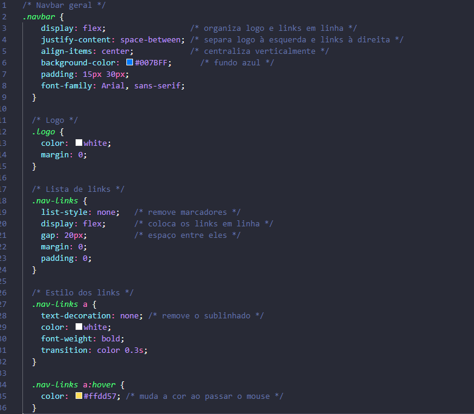

1. Estrutura HTML do Card
Primeiro, criamos a base com tags simples:
2. Estilização com CSS
Agora, aplicamos estilos para dar a cara de “card”:
A propriedade "display: flex" transforma um elemento em um container flexível, permitindo
organizar os
itens dentro dele em linha ou coluna. Com o flexbox, é fácil alinhar, centralizar e distribuir
espaços
entre os elementos, o que é muito útil para criar layouts responsivos, como vários cards lado a
lado.
1. Estrutura HTML da Navbar
2. Estilização com CSS

Resultado: você terá uma navbar fixa no topo da página, com o logo à esquerda e os links alinhados à
direita.
1. Estrutura HTML do botão
 2. Estilização com CSS
2. Estilização com CSS
 Resultado: um botão azul, arredondado, que escurece e cresce um pouco quando o usuário passa o mouse.
Resultado: um botão azul, arredondado, que escurece e cresce um pouco quando o usuário passa o mouse.
Local para ads